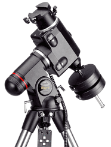
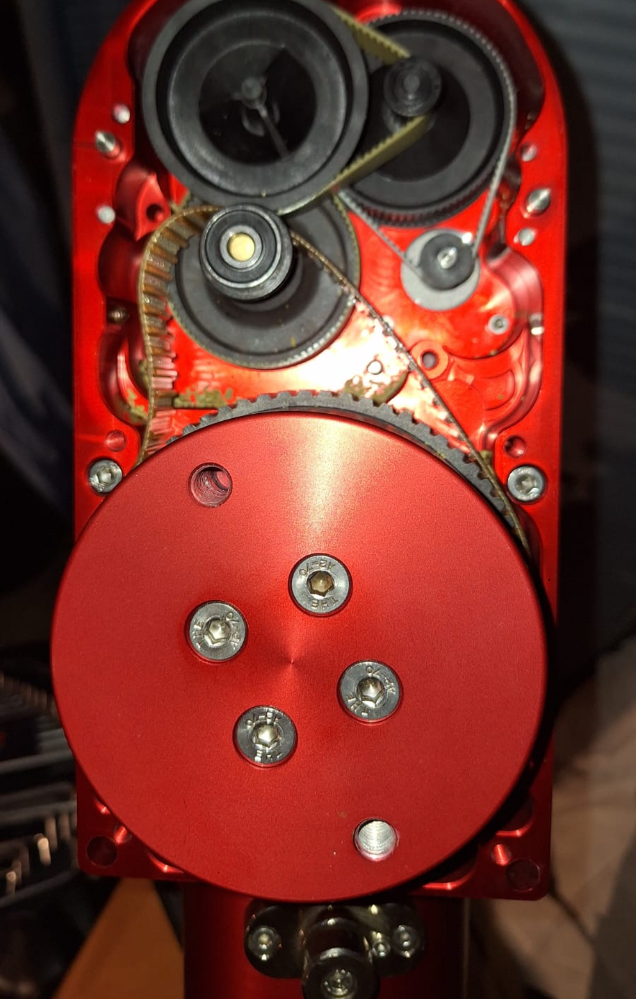
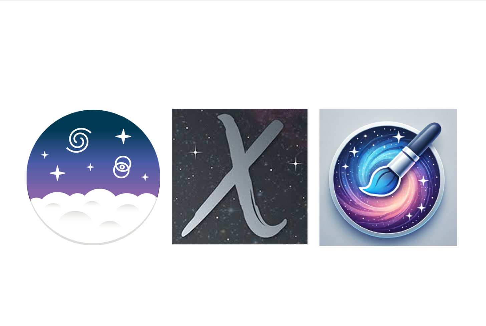

Strumenti e Tecniche
(testi a cura di Marco Di Biase)
🔭 Recensioni Montature
Analisi approfondita della montatura SYNTA Skywatcher EQ-6: pregi, difetti e ottimizzazioni.
 Skywatcher EQ-6 "Una Montatura che regge"🆚 Confronti Ottiche
Un testa a testa tra due classici: Celestron 8 contro Meade 8.
 Celestron 8 vs Meade 8
Celestron 8 vs Meade 8
⚙️ Manutenzione
Guida passo-passo per sostituire le cinghie di trasmissione sull’Avalon Linear.
 Sostituzione cinghie Avalon Linear💻 Post Processing
Guida completa all'elaborazione delle immagini astronomiche a cura di Fabio Tempera.
 Guida al Post Processing